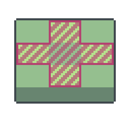

Goopweed
Goopweed is a supporting plant that doubkes the growth multiplier of nearby plants.
Growth Stages
Function
Goopweed doubles the growth multiplier of the four tiles directly adjacent to its own, shown in the diagram when Goopweed is planted on the centre tile.